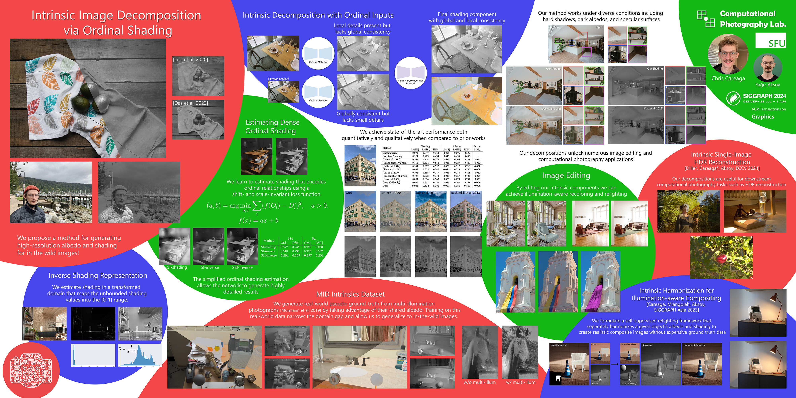

Intrinsic Image Decomposition via Ordinal Shading

(Top) We propose a two-step pipeline for intrinsic decomposition. We first estimate low- and high-resolution ordinal shading maps that provide global and local constraints. We then estimate the full intrinsic decomposition using these ordinal inputs. Our decomposition results can be used for applications like recoloring and relighting. (Bottom) When compared to prior works, our method generates high-quality results on challenging images in the wild without leaking textures between each component and accurate shading values around specularities.
Abstract
Intrinsic decomposition is a fundamental mid-level vision problem that plays a crucial role in various inverse rendering and computational photography pipelines. Generating highly accurate intrinsic decompositions is an inherently under-constrained task that requires precisely estimating continuous-valued shading and albedo. In this work, we achieve high-resolution intrinsic decomposition by breaking the problem into two parts. First, we present a dense ordinal shading formulation using a shift- and scale-invariant loss in order to estimate ordinal shading cues without restricting the predictions to obey the intrinsic model. We then combine low- and high-resolution ordinal estimations using a second network to generate a shading estimate with both global coherency and local details. We encourage the model to learn an accurate decomposition by computing losses on the estimated shading as well as the albedo implied by the intrinsic model. We develop a straightforward method for generating dense pseudo ground truth using our model’s predictions and multi-illumination data, enabling generalization to in-the-wild imagery. We present exhaustive qualitative and quantitative analysis of our predicted intrinsic components against state-of-the-art methods. Finally, we demonstrate the real-world applicability of our estimations by performing otherwise difficult editing tasks such as recoloring and relighting.
Implementation
Video
Paper
 |
 |
Dataset

|
We present the first dense, real-world, and large-scale dataset for intrinsic image decomposition. Our dataset was derived from the Multi-Illumination Dataset by Murmann et al. and consists of 1000 scenes under 25 different illuminations each, with 1000 unique albedo maps and 25.000 image - RGB shading pairs.
This dataset accompanies our ACM Trans. Graph. 2023 paper.
@ARTICLE{careagaIntrinsic,
author={Chris Careaga and Ya\u{g}{\i}z Aksoy}, title={Intrinsic Image Decomposition via Ordinal Shading}, journal={ACM Trans. Graph.}, year={2023}, } |
Poster
|  |
BibTeX
author={Chris Careaga and Ya\u{g}{\i}z Aksoy},
title={Intrinsic Image Decomposition via Ordinal Shading},
journal={ACM Trans. Graph.},
year={2023},
volume = {43},
number = {1},
articleno = {12},
numpages = {24},
}
License
The methodology presented in this work is safeguarded under intellectual property protection. For inquiries regarding licensing opportunities, kindly reach out to SFU Technology Licensing Office <tlo_dir ατ sfu δøτ ca> and Dr. Yağız Aksoy <yagiz ατ sfu δøτ ca>.
Related Publications

|
ACM Transactions on Graphics (Proc. SIGGRAPH Asia), 2024
Intrinsic image decomposition aims to separate the surface reflectance and the effects from the illumination given a single photograph.
Due to the complexity of the problem, most prior works assume a single-color illumination and a Lambertian world, which limits their use in illumination-aware image editing applications.
In this work, we separate an input image into its diffuse albedo, colorful diffuse shading, and specular residual components.
We arrive at our result by gradually removing first the single-color illumination and then the Lambertian-world assumptions.
We show that by dividing the problem into easier sub-problems, in-the-wild colorful diffuse shading estimation can be achieved despite the limited ground-truth datasets.
Our extended intrinsic model enables illumination-aware analysis of photographs and can be used for image editing applications such as specularity removal and per-pixel white balancing.
@ARTICLE{careagaColorful,
author={Chris Careaga and Ya\u{g}{\i}z Aksoy}, title={Colorful Diffuse Intrinsic Image Decomposition in the Wild}, journal={ACM Trans. Graph.}, year={2024}, volume = {43}, number = {6}, articleno = {178}, numpages = {12}, } |


|
ECCV, 2024
The low dynamic range (LDR) of common cameras fails to capture the rich contrast in natural scenes, resulting in loss of color and details in saturated pixels.
Reconstructing the high dynamic range (HDR) of luminance present in the scene from single LDR photographs is an important task with many applications in computational photography and realistic display of images.
The HDR reconstruction task aims to infer the lost details using the context present in the scene, requiring neural networks to understand high-level geometric and illumination cues.
This makes it challenging for data-driven algorithms to generate accurate and high-resolution results.
In this work, we introduce a physically-inspired remodeling of the HDR reconstruction problem in the intrinsic domain.
The intrinsic model allows us to train separate networks to extend the dynamic range in the shading domain and to recover lost color details in the albedo domain.
We show that dividing the problem into two simpler sub-tasks improves performance in a wide variety of photographs.
@INPROCEEDINGS{dilleIntrinsicHDR,
author={Sebastian Dille and Chris Careaga and Ya\u{g}{\i}z Aksoy}, title={Intrinsic Single-Image HDR Reconstruction}, booktitle={Proc. ECCV}, year={2024}, } |


|
SIGGRAPH Asia, 2023
Despite significant advancements in network-based image harmonization techniques, there still exists a domain disparity between typical training pairs and real-world composites encountered during inference.
Most existing methods are trained to reverse global edits made on segmented image regions, which fail to accurately capture the lighting inconsistencies between the foreground and background found in composited images.
In this work, we introduce a self-supervised illumination harmonization approach formulated in the intrinsic image domain.
First, we estimate a simple global lighting model from mid-level vision representations to generate a rough shading for the foreground region.
A network then refines this inferred shading to generate a harmonious re-shading that aligns with the background scene.
In order to match the color appearance of the foreground and background, we utilize ideas from prior harmonization approaches to perform parameterized image edits in the albedo domain.
To validate the effectiveness of our approach, we present results from challenging real-world composites and conduct a user study to objectively measure the enhanced realism achieved compared to state-of-the-art harmonization methods.
@INPROCEEDINGS{careagaCompositing,
author={Chris Careaga and S. Mahdi H. Miangoleh and Ya\u{g}{\i}z Aksoy}, title={Intrinsic Harmonization for Illumination-Aware Compositing}, booktitle={Proc. SIGGRAPH Asia}, year={2023}, } |


|
CVPR, 2023
Flash is an essential tool as it often serves as the sole controllable light source in everyday photography.
However, the use of flash is a binary decision at the time a photograph is captured with limited control over its characteristics such as strength or color.
In this work, we study the computational control of the flash light in photographs taken with or without flash.
We present a physically motivated intrinsic formulation for flash photograph formation and develop flash decomposition and generation methods for flash and no-flash photographs, respectively.
We demonstrate that our intrinsic formulation outperforms alternatives in the literature and allows us to computationally control flash in in-the-wild images.
@INPROCEEDINGS{Maralan2023Flash,
author={Sepideh Sarajian Maralan and Chris Careaga and Ya\u{g}{\i}z Aksoy}, title={Computational Flash Photography through Intrinsics}, journal={Proc. CVPR}, year={2023}, } |